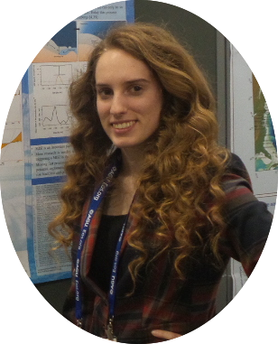

|  |
Currently, I am a research technologist for the network for Sustainable Climate Risk Management (SCRiM) at Pennsylvania State University. A few of my activities include supporting archival and accessibility of research and climate data, testing and validating research codes and models across multiple personal and universities, and developing visualization, analysis, and educational tools. Over the past year, I have published several peer-reviewed scientific papers with a few more papers currently in review where I am the first author or a co-author. The research page of this website is a great way to check out my previous work and accompanying codes. I completed a Bachelor of Science in geology from Bowling Green State University and earned a Master's degree in Geoscience from Penn State University. At PSU, I was supervised by Dr. Klaus Keller and coadvised by Dr. Chris Forest. In my thesis, I analyzed the impacts of statistical calibration methods on the upper tails of global sea-level projections. This research was presented at the European Geosciences Union spring 2015 meeting and was published in Climatic Change in 2017. I enjoy being out in the field and working with climate models — check out my field work and research pages. My past work with climate models deal with Bayesian statistics, projecting sea-level rise, and projecting ice sheet melt. I have also recently become an avid and active Shiny and ArcGIS user. My past research in the field was working in a Chemistry lab under Dr. Bob Midden where I collected and analyzed water samples for high concentrations of ammonia, E. Coli, phosphate, and nitrate along the Portage river. I enjoy traveling, anything volcano related, hiking, kayaking, photography, camping, and recently cross stitching/quilting. Having grown up in the midwest, specifically the snow-belt of Ohio, I enjoy really good blizzards and thunderstorms. |